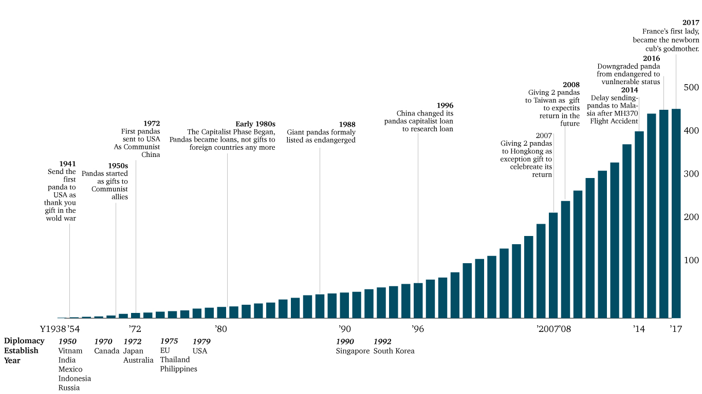

The history of China using giant pandas as diplomatic tool to manage relationship with other countries has been for decades. These two black eyes with a short fuzzy tail and ears that look like pom-poms has been bearing the burdens and taking responsibility of exporting Chinese soft power. But is panda diplomacy still working today?
World Leaders Can Not Resist Panda’s Charm
1. Bill Clinton Helped Feed the New Panda in Washington D.C. 2001.
2. Canadian Prime Minister Justin Trudeau Helped Name Two Pandas at the Toronto Zoo 2016.
3. French President Macron Celebrates Birthday with Panda Cub Yuan Meng 2017.
4. Melania Trump Visits Beijing Zoo 2017.
Standing in front of the fence just next to the pandas, US President Bill Clinton helped fed one of the two new pandas during a visit to the new panda exhibit at the National Zoo 06 January 2001 in Washington, DC. Those pandas were on a 10-year loan from the China Wildlife Conservation and United States were providing $1 Million a year.
On March 7, 2016, Canada Prime Minister Justin Trudeau attended a high-profile ceremony in Toronto Zoo to reveal the names of its first Canadian-born twin panda cubs. The young male black-and-white bear is named Jia Panpan, which means Canadian Hope and his female counterpart is named Jia Yueyue, which means Canadian Joy. Justin Trudeau remarked during the "once in a lifetime" event that the panda is a symbol of peace and friendship, "which is fitting considering Canada's ever-growing relationship with China."
On December 16,2017, French President Emmanuel Macron visited Yuan Meng, the country's first-ever panda cub, the baby panda godson of Brigitte Macron while he was celebrating his 40th birthday with family at Beauval zoo in central France. He went to visit China the coming month with gifts in return of China’s panda diplomacy, which is believed will further enhance the friendship between the two leaderships" and improve cooperation.
Similarly, at the same year, American First lady Melania Trump charms Chinese public when she engaged in panda diplomacy and helped fed the giant pandas at Beijing Zoo.
Apart from them, pandas have been photo-opportunity props for leaders ranging from former UK prime minister Edward Heath to Michelle Obama, François Hollande and the queen of Spain. The universal love of pandas has been described as one of most “powerful weapons” in China’s effort to build soft power for decades.
Panda Boom & Diplomacy
Source: www.history.com
Pandas have been related to diplomacy for decades.
Before 1980s: Gift to foreign countries. Panda diplomacy can date back to Tang dynasty, but the first modern example as an explicit political gift was recorded in 1941, when China sent a pair of pandas to United States as a gift for fighting the occupying Japanese. After Republic of China established in 1949, pandas started to send as gifts to its communist allies and new diplomat friends, United States, the UK, Japan, France, Germany, Spain and Mexico.
Early 1980s to late 1990s: The capitalist phase began, pandas became loans, not gifts to foreign countries any more. China had the reform and opening-up policy in 1979, the country tried its best to get rich fast. China ceases to gift pandas to other countries and instead begins loaning pandas to foreign zoos in exchange for up to $1 million a year in fees. In 1988, the species was listed as endangered animals, making it more valuable in the world. However, the US Fish and Wildlife Service banned the short-term import of pandas and the purely commercial era of panda diplomacy gradually ended at the end of 1990s.
1996 to 2000s: The pandas capitalist loan was replaced by research loan. In 1996, the San Diego Zoo agreed to take a pair of pandas on a 12-year “research loan”, at the cost of $1m a year. Since then China can offer a pair of healthy and fertile pandas to other nations for a 10-year cooperative study on loans, under terms including a fee up to $1mper year and a provision that any cubs born during the loan were the property of the PRC and should be sent back to China when it was two years old.
2000s to date: soft-power phases. There is not obvious evidence to show when the soft-power phases start, but there are data showing the pandas are related to deliberate high-level policy decisions. In 2007, China gave 2 pandas to Hongkong as exception gift to celebrate its return; In 2008, it gave another 2 pandas to Taiwan as gifts to expect its return in the future; In 2014, China decided to delay its panda loan to Malaysia after the MH370 Flight Accident; In 2017, France first lady became the newborn cubs god mother after the presidents agree to promote China-France cooperation.
Trade & Panda Diplomacy
Source: www. giantpandagloabal.com, www.worldstopexports.com
There is a connection between major trade deals and the panda’s distribution. In general, bigger grade partners have more pandas; China special administrative regions have more pandas; Developed countries have more pandas than undeveloped countries.
According to Researchers at Oxford University, it also shown that countries which help china with natural resources secure and advanced technology would get more pandas, those who violate Chinese policy would get less pandas. For example, in 2012, China agreed to loan two pandas to Canada for 10 years, after Canadian Prime Minister Stephen Harper signed an agreement expanding Canadian uranium exports to China to help feed the country’s growing number of nuclear power plants on that same trip. By contrast, in 2010, two panda cubs were returned to China from the U.S. only days after U.S. President Barack Obama met Tibetan spiritual leader the Dalai Lama against the Chinese government’s wishes. (Berthiaume, 2013)
From “Endangered” To “Vulnerable”
Source: www.giantpandagloabal.com
In 2016, giant pandas were degraded from endangered to vulnerable. Captive panda producing and raising is no longer as difficult as before. Pandas population has shown steady. From data collected, there are 355 pandas alive in China in 2017, 65 % of them are in their adults, 18 % are in their teenager period. Among those 15 organizations or countries outside mainland China, America has 11 pandas, over 63.6% of them are in their elder phase, America’s pandas are proceeding an aged society. In terms of deceased pandas, 83% died in their elder, which again shown that pandas living standards have improved.
Giant pandas are considered China's national treasures. Panda diplomacy has decades of history. It has been treated as gifts, marketing tool and an ambassador. As more and more pandas can be reproduced, there are a lot of discussions about its value. However, the unpublished pandas upgraded amounts and their polluted habitats are also under concerns. Whether China panda diplomacy can enhance Chinese soft power is still unknown.